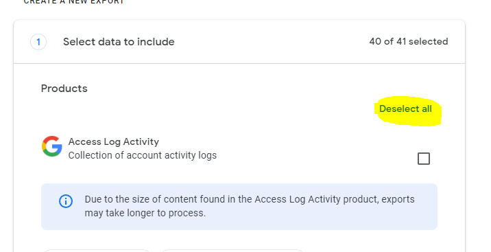
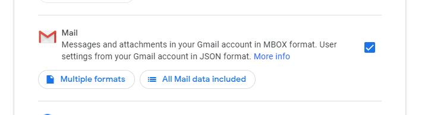

Acquiring your MBOX file
First, Go to
https://takeout.google.com/?hl=en
This page allows you to download any data google contains about your accounts.
Deselect all, then only select 'Mail'
this is to ensure we dont download all of your Google data, which would take a very long time
 Click on 'All Mail Data Included'
We will now reduce the data included from the download to be just emails in the SPAM folder
Ensure Spam is the only field selected